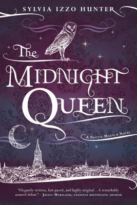
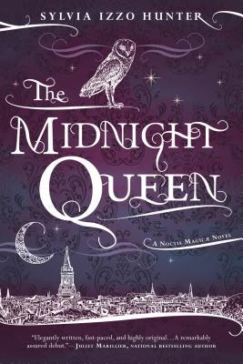

A gothic masterpiece of tempestuous passions and dark secrets, Charlotte Brontë's Jane Eyre is edited with an introduction and notes by Stevie Davis in Penguin Classics.
Charlotte Brontë tells the story of orphaned Jane Eyre, who grows up in the home of her heartless aunt, enduring loneliness and cruelty. This troubled childhood strengthens Jane's natural independence and spirit - which prove necessary when she finds employment as a governess to the young ward of Byronic, brooding Mr Rochester. As her feelings for Rochester develop, Jane gradually uncovers Thornfield Hall's terrible secret, forcing her to make a choice. Should she stay with Rochester and live with the consequences, or follow her convictions - even if it means leaving the man she loves? A novel of intense power and intrigue, Jane Eyre dazzled readers with its passionate depiction of a woman's search for equality and freedom.
At twenty-two, Cheryl Strayed thought she had lost everything. In the wake of her mother’s death, her family scattered and her own marriage was soon destroyed. Four years later, with nothing more to lose, she made the most impulsive decision of her life. With no experience or training, driven only by blind will, she would hike more than a thousand miles of the Pacific Crest Trail from the Mojave Desert through California and Oregon to Washington State — and she would do it alone.
Told with suspense and style, sparkling with warmth and humor, Wild powerfully captures the terrors and pleasures of one young woman forging ahead against all odds on a journey that maddened, strengthened, and ultimately healed her.
The unforgettable novel of a childhood in a sleepy Southern town and the crisis of conscience that rocked it, To Kill A Mockingbird became both an instant bestseller and a critical success when it was first published in 1960. It went on to win the Pulitzer Prize in 1961 and was later made into an Academy Award-winning film, also a classic.
Compassionate, dramatic, and deeply moving, To Kill A Mockingbird takes readers to the roots of human behavior - to innocence and experience, kindness and cruelty, love and hatred, humor and pathos. Now with over 18 million copies in print and translated into forty languages, this regional story by a young Alabama woman claims universal appeal. Harper Lee always considered her book to be a simple love story. Today it is regarded as a masterpiece of American literature.
When Elizabeth Bennet first meets eligible bachelor Fitzwilliam Darcy, she thinks him arrogant and conceited, while he struggles to remain indifferent to her good looks and lively mind. When she later discovers that Darcy has involved himself in the troubled relationship between his friend Bingley and her beloved sister Jane, she is determined to dislike him more than ever. In the sparkling comedy of manners that follows, Jane Austen shows the folly of judging by first impressions and superbly evokes the friendships, gossip and snobberies of provincial middle-class life.
Winter, 1945. Four teenagers. Four secrets.
Each one born of a different homeland; each one hunted, and haunted, by tragedy, lies…and war.
As thousands of desperate refugees flock to the coast in the midst of a Soviet advance, four paths converge, vying for passage aboard the Wilhelm Gustloff, a ship that promises safety and freedom.
Yet not all promises can be kept.
Inspired by the single greatest tragedy in maritime history, bestselling and award-winning author Ruta Sepetys (Between Shades of Gray) lifts the veil on a shockingly little-known casualty of World War II. An illuminating and life-affirming tale of heart and hope.
J.K. Rowling's screenwriting debut is captured in this exciting hardcover edition of the Fantastic Beasts and Where to Find Them screenplay.
When Magizoologist Newt Scamander arrives in New York, he intends his stay to be just a brief stopover. However, when his magical case is misplaced and some of Newt's fantastic beasts escape, it spells trouble for everyone…
Fantastic Beasts and Where to Find Them marks the screenwriting debut of J.K. Rowling, author of the beloved and internationally bestselling Harry Potter books. Featuring a cast of remarkable characters, this is epic, adventure-packed storytelling at its very best.
Whether an existing fan or new to the wizarding world, this is a perfect addition to any reader's bookshelf.